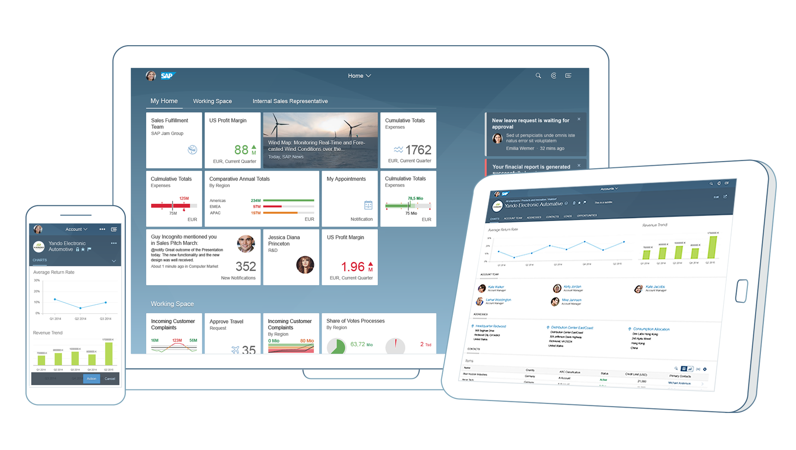

Adapting to Operating Systems And Devices
Adapting to Operating Systems And Devices
No need to worry about device specifics! OpenUI5 apps run on smartphones,
tablets, and desktops. The UI controls automatically adapt themselves to each device's
capabilities and make the most of the available real estate. supports several functions to
adapt to operating systems and devices.

Parent topic:
Previous:
Next: